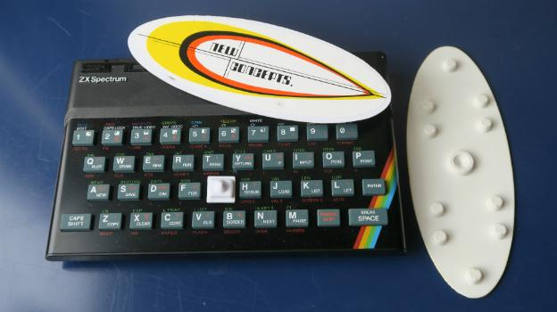
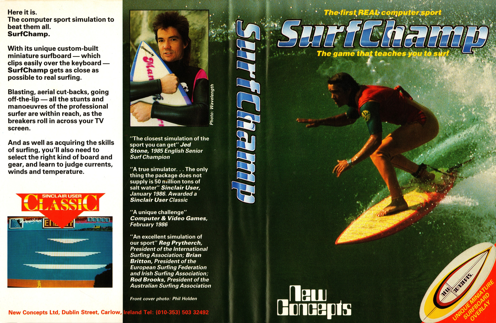

Surf Champ
The ZX Spectrum game that shipped with a miniature plastic surfboard — shifting your hands forward, back, and sideways translated weight into fluid-dynamic surfing physics.

Overview
Surf Champ was a surfing simulation game released in 1985 for the ZX Spectrum 48K by New Concepts, a small Irish company founded by physicist Dr. Norman McMillan, academic John Frayne, and astrophysicist Prof. Susan McKenna-Lawlor (who later worked on Mars and Venus missions with NASA and Russia). The game came packaged with a 19-centimeter plastic surfboard that sat on top of the Spectrum's keyboard. The underside of the board had metal 'bobbles' positioned to contact specific keys when the player shifted their hand weight forward, backward, left, or right. This translated physical weight distribution into in-game surfing maneuvers: trimming, bottom turns, and cutbacks.
McMillan, a surfer himself, programmed real fluid-dynamics algorithms to model wave behavior at Fistral Beach in Cornwall. The software accounted for height, weight, board type and length, and wetsuit gear. A decreasing energy bar, designed with input from a doctor, simulated fatigue. Side B contained a tutorial program. The game was endorsed by the International Surfing Association and the European Surfing Association.
At the 1985 European Surfing Championships at Rossnowlagh Beach, Ireland, New Concepts demonstrated the game. When surf went flat, professional surfers played it non-stop and organized an impromptu tournament — the first World Computer Surfing Championship — won by English champion Jed Stone. Pre-sales for 180,000 units were secured, but the Irish Industrial Development Authority limited production to 3,000 copies for "test marketing." Christmas 1985 passed. The Commodore 64 port sold only 600 copies. New Concepts folded, and their planned Ski Champ and motion-sensitive HUCI controller never materialized.
Deep dive
Dr. Norman McMillan was a 40-year-old physics and computer science lecturer at Carlow RTC in Ireland. As a surfer, he wanted to create a game with proper mathematical algorithms rather than arcade approximations. He teamed up with John Frayne for the hardware concept and Prof. Susan McKenna-Lawlor, an astrophysicist specializing in ultra-fast programming for space technology. Each invested £20,000 to form New Concepts. The IDA provided additional startup funding. The ZX Spectrum was chosen because its rubber keyboard could be pressed by the bobbles on the underside of the plastic surfboard.
The player placed the miniature surfboard on the Spectrum's keyboard, aligning it with a button overlay. The board had conductive metal bobbles on its underside. Leaning weight forward, backward, left, or right depressed specific keyboard keys. The software interpreted these keystrokes as surfing maneuvers: forward weight → trimming down the wave face, back-left → bottom turn, back-right → cutback, centered → neutral glide. The interaction was proprioceptive — the player's body English on the board translated directly to on-screen surfing physics. Because the Spectrum keyboard detected multiple simultaneous key presses, the system supported nuanced weight distributions. Players selected height, weight, board type, and wetsuit before entering the water.
At the 1985 European Surfing Championships, with no waves, professional surfers played Surf Champ non-stop. Each country selected four surfers for a 'surf-off.' English champion Jed Stone won with 23,700 points, becoming the first World Computer Surfing Champion. The game also offered a cash prize for any player who could beat Stone's score.
Surf Champ is arguably the most accurate surfing simulation ever made — professional surfers testified to its precision. The World Surf League's mobile game True Surf (2020) was described by its creators as 'the culmination of New Concepts' early endeavours.' Jed Stone played True Surf during lockdown and said, 'It's the same as Surf Champ, only without the feel of the board.' The HUCI motion-sensitive controller prototype, developed alongside Surf Champ, anticipated the Nintendo Wii by 20 years.
Team & pioneers
- Dr. Norman McMillan. Physics lecturer, surfer, conceived the game and wrote fluid-dynamics algorithms
- John Frayne. Academic collaborator, designed the surfboard keyboard overlay hardware
- Prof. Susan McKenna-Lawlor. Astrophysicist, specialized in ultra-fast programming; later worked on NASA and Russian missions to Mars, Venus, and the Moon
- New Concepts Ltd. Irish company formed by McMillan, Frayne, and McKenna-Lawlor
Media
